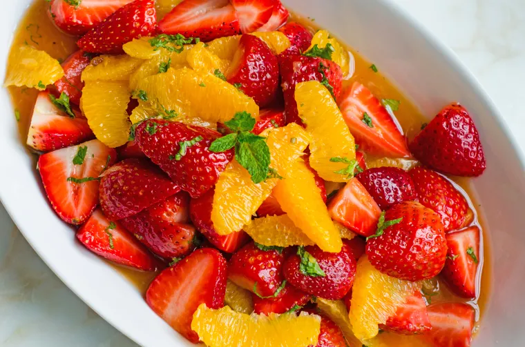

Sanji's Fruit Salad

Description
Have you ever watched One Piece and been like... "Dayum. That dish Sanji made looks skrimdidilidumptious. I wish
I could make that at home!"
Well wish no longer for I will now teach you how to make Sanji's Famous Fruit Salad.
Ingredients
- 1 Orange
- ¼ of a Pineapple (Approx 200g)
- 6 Strawberries
- 1 Banana
- 1-2 Tablespoons of Lemon Juice
- 30ml of Liqueur (Kirsch etc.)
- 2 Tablespoons of Granulated Sugar
- Mint leaves for Garnishing
Steps
- Peel the orange (including the white fibers if you’re being fancy) and remove the sections with a carving
knife one by one. Do this over a bowl*** and set aside any juice that’s left over.
- Peel and core the pineapple, and then cut into bite-sized pieces. Remove the stems and halve the
strawberries.
- Put the fruit from step one into a bowl, and add a mixture of the leftover orange juice, lemon juice,
liqueur and sugar.
- Leave the bowl to cool for 1-2 hours in the refrigerator.
- Just prior to eating, cut the banana into coins of about 1cm thickness, mix with the chilled bowl of fruit
and serve in a fancy bowl. Garnish with the mint leaves.